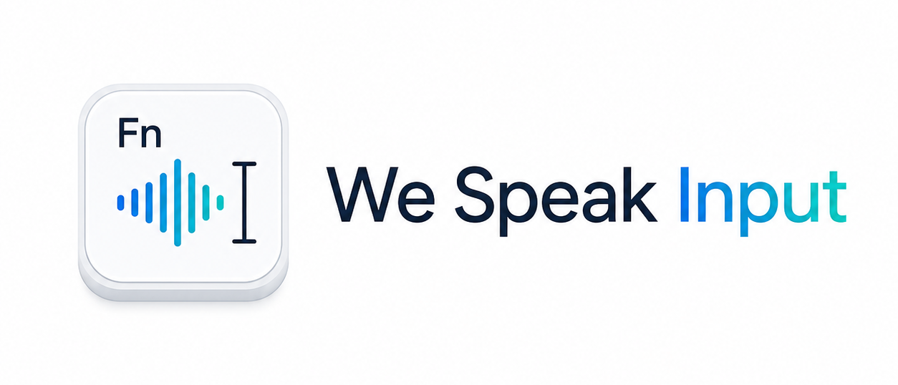
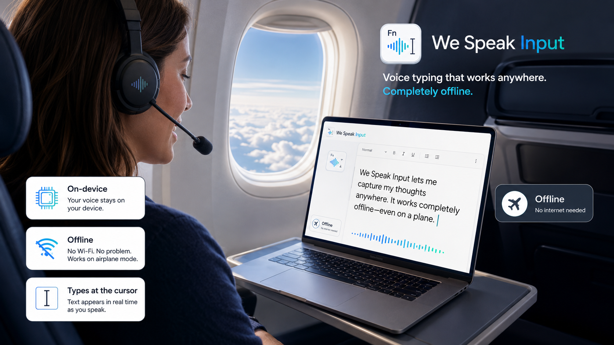
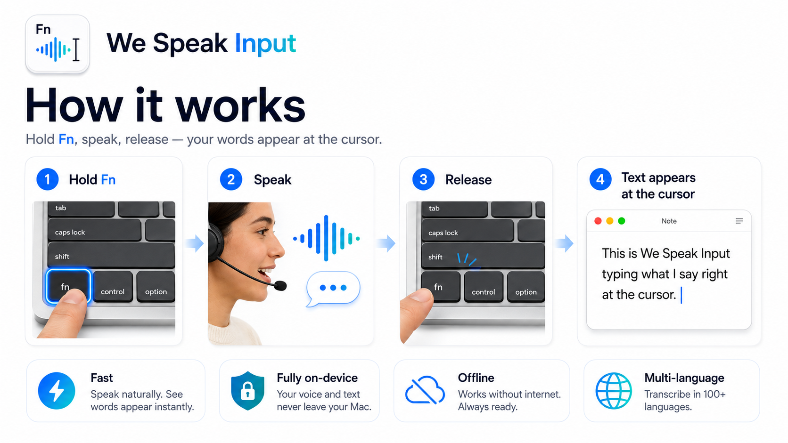
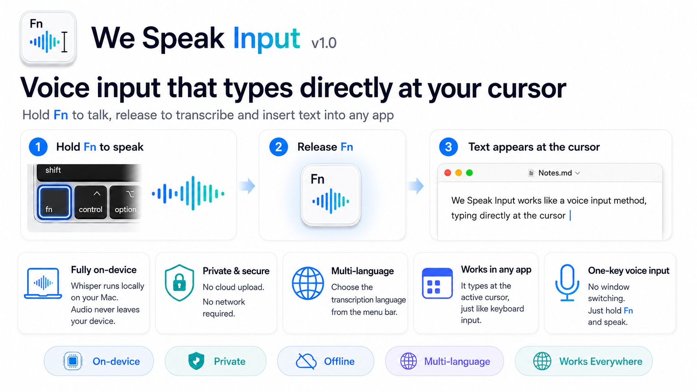

A macOS voice-input tool that types what you say — right at the cursor, in any app. Fully on-device and private. 按住 Fn 键说话、松开即把语音转写成文本，像输入法一样直接输入到任意应用的光标处。完全本地、保护隐私。
Free · macOS 13+ · Apple Silicon & Intel | 免费 · macOS 13 及以上 · 通用二进制


Speak instead of type, anywhere on your Mac. 在 Mac 的任何地方，用说话代替打字。
Press Fn to talk, release to transcribe.按下 Fn 说话，松开自动转写。
Pick which languages to recognize (multi-select); recognition stays focused.在菜单栏勾选要识别的语言（可多选），识别更聚焦。
Switch the UI between 中文 and English, or follow the system.界面可切换中文 / English，或跟随系统。
On-device Whisper. Audio never leaves your Mac.本地 Whisper 识别，音频不离开本机。
Text is typed at the cursor, so it works in any app.文本直接输入到光标处，适用于任意应用。
Sentence-ending punctuation is added automatically.每句自动补上句末标点。
Powered by a locally bundled Whisper model (large-v3-turbo), running fully offline. 由随应用打包的本地 Whisper 模型（large-v3-turbo）完成，完全离线、无需联网。

Three steps. 三步搞定。
Download the .dmg and drag We Speak Input into Applications.
下载 .dmg，把 We Speak Input 拖入「应用程序」。
First launch: right-click the app → Open (it isn't notarized yet).
首次打开：右键应用 →「打开」（应用尚未公证）。
Grant Microphone and Accessibility when prompted.
按提示授予麦克风与辅助功能权限。
Free download. Works on Apple Silicon & Intel Macs running macOS 13 or later.
免费下载，支持 macOS 13 及以上的 Apple Silicon 与 Intel Mac。